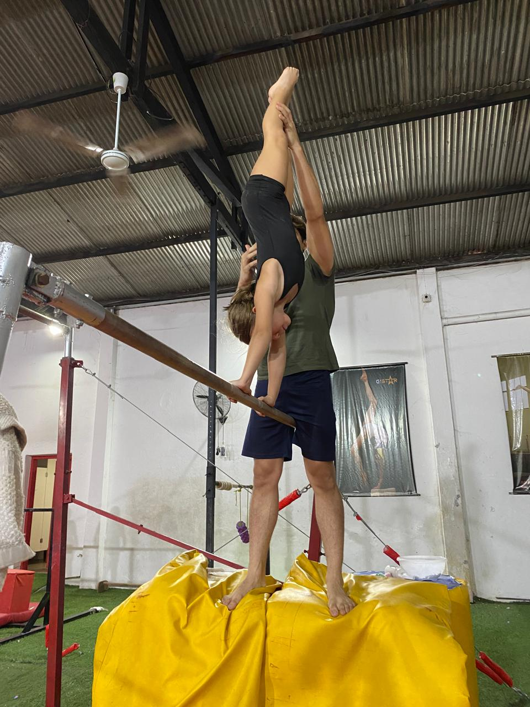

Nosotros
Somos un club de Gimnasia Artística y Parkour en pleno centro de Asunción. Nuestro propósito es desarrollar habilidades motoras y potenciar el talento de niños, niñas, adolescentes y adultos, ya sea en el nivel inicial, recreativo o en entrenamientos de alto rendimiento.
Fundado en marzo de 2024 por Gisselle Jara, exgimnasta de la Selección Paraguaya de Gimnasia, entrenadora, jueza y apasionada de este deporte, el club nace con la misión de crear una comunidad donde los sueños deportivos se puedan hacer realidad.

En Gistar, creemos que la excelencia no es casualidad, es el resultado de un trabajo en equipo comprometido, capacitado y profundamente apasionado por la gimnasia. Nuestro staff está conformado por profesionales con formación y experiencia en distintas áreas del entrenamiento, integrando preparación física, técnica específica, biomecánica, danza y expresión corporal, para ofrecer a cada gimnasta un desarrollo verdaderamente integral.
Detrás de cada logro, cada avance y cada sonrisa en el gimnasio, hay un equipo que planifica, acompaña y guía con responsabilidad y vocación. Gisselle Jara, Darío Rojas, Meli Blanco, Laura Machuca, Thiago Enciso, Gloria Espínola, Ale García y Sol Castellano trabajan de manera coordinada para potenciar las capacidades individuales, respetando los procesos y construyendo bases sólidas que permitan crecer con seguridad y confianza. A su vez, nuestra administradora Myriam Bazzano sostiene la organización y el funcionamiento diario, brindando respaldo a las familias y garantizando una gestión ordenada y eficiente.
Contamos además con el liderazgo estratégico de nuestro vicepresidente, Marcelo Alonso, experto en Inteligencia Artificial, cuya visión innovadora nos impulsa a integrar tecnología, planificación moderna y herramientas de vanguardia en la gestión deportiva. Su aporte fortalece nuestra proyección institucional y nos posiciona como un club que mira hacia el futuro, combinando tradición deportiva con innovación.
En Gistar no solo entrenamos gimnastas; formamos niñas disciplinadas, seguras, perseverantes y comprometidas con sus metas. Apostamos a la capacitación constante, al trabajo en equipo y a la mejora continua, porque sabemos que cuando el equipo crece, nuestras gimnastas también crecen. Aquí cada detalle cuenta, cada entrenamiento suma y cada profesional aporta su experiencia para construir un espacio de excelencia, contención y resultados.
Nuestro Equipo
Laura Machuca
Laura Machuca es bailarina profesional en danzas paraguayas, danzas árabes y bellydance, coreógrafa y técnica especializada en gimnasia. Cuenta con formación en percusión oriental, contemporáneo, ritmos latinos, aerobic deportivo y orientación de tesis, entre otros. Es instructora de Gimnasia General y técnicas acrobáticas, técnica en Acrodance y Acrotela, entrenadora de Gimnasia Artística y Rítmica, y jueza nacional e internacional de Gimnasia Rítmica certificada por la Federación Internacional de Gimnasia. Fue jueza en los Juegos Suramericanos Asunción 2022 y actualmente se desempeña como Presidenta del Comité Técnico de Gimnasia Rítmica 2024. Se caracteriza por ser una entrenadora altamente exigente, orientada a la excelencia técnica, la disciplina y el máximo rendimiento de sus atletas.
Gloria Espínola
Gloria Espínola es entrenadora de gimnasia artística, apasionada por el deporte y comprometida con el desarrollo integral de sus atletas. Su trabajo se enfoca en la mejora continua de la técnica, la disciplina y la formación en valores como la constancia, el trabajo en equipo y la superación personal, manteniendo una capacitación permanente y actualización constante. Además, es Abogada y Notaria Pública, integrando el rigor técnico del ámbito jurídico con liderazgo, organización y compromiso, aplicando en cada área un enfoque profesional orientado a la excelencia. Su estilo de enseñanza es firme y estructurado, con una exigencia equilibrada que potencia el crecimiento individual.
Sol Castellano
Sol Castellano es ex atleta de la selección paraguaya de gimnasia artística y actualmente entrenadora especializada en la formación técnica y competitiva. La disciplina y la constancia que marcaron su carrera son hoy la base de su metodología de trabajo. Perfeccionista y comprometida, mantiene una exigencia constante y consciente, buscando que cada alumna disfrute el proceso, sea feliz, fortalezca su confianza y comprenda que no existen límites cuando se trabaja con dedicación y pasión. Se mantiene en constante capacitación para brindar siempre un entrenamiento actualizado y de calidad.
Thiago Enciso
Thiago Enciso es ex integrante de la selección paraguaya y entrenador especializado en gimnasia artística y parkour. Su trabajo se centra en el perfeccionamiento técnico, la calidad del movimiento y la evolución constante de cada atleta, acompañando su crecimiento deportivo con disciplina y profesionalismo. Mantiene una línea de alta exigencia, priorizando procesos sólidos que permitan alcanzar un rendimiento seguro, eficiente y sostenible en el tiempo.
Meli Blanco
Meli Blanco es entrenadora, bailarina y coreógrafa con sólida formación en desarrollo físico, técnico y artístico. Cuenta con experiencia en la enseñanza de gimnasia artística, fortalecimiento, flexibilidad, coordinación y preparación física, adaptando cada proceso según la edad, nivel y objetivos de sus alumnos. Comprometida, creativa y empática, trabaja con pasión y acompañamiento cercano, entendiendo el entrenamiento como una herramienta de crecimiento personal, disciplina y construcción de confianza.
Darío Rojas
Darío Rojas es entrenador de gimnasia con enfoque en el desarrollo integral y la preparación física, además de profesor de deportes de combate en áreas técnicas y competitivas. Su metodología combina compromiso, disciplina, constancia e igualdad, promoviendo el respeto y el amor por el deporte como pilares fundamentales del crecimiento atlético. Mantiene una alta exigencia física, acompañando a cada atleta en el camino hacia el cumplimiento de sus metas deportivas.
Alejandra García
Alejandra García es instructora de Flexibilidad y Preparación Física, ex atleta internacional de natación federada representando a Paraguay durante 10 años. Su formación integra 12 años de Ballet Clásico, aportando alineación postural, control corporal y elegancia técnica, junto con una especialización actual en Pole Sport, flexibilidad y entrenamiento de fuerza. Su metodología se centra en el desarrollo seguro del rango de movimiento, el fortalecimiento del core y la salud articular, priorizando la prevención de lesiones en etapas de crecimiento. Mantiene una exigencia moderada y técnica, enfocada en formar gimnastas fuertes, flexibles y biomecánicamente eficientes, combinando disciplina, precisión y cuidado integral del cuerpo.